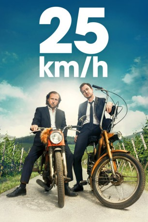

#11021 25 km/h
 
 IMDB-Wertung: 7.4 / 10
IMDB-Wertung: 7.4 / 10  Metascore: 0
Metascore: 0 
Die beiden Brüder Georg und Christian treffen sich nach 30 Jahren auf der Beerdigung ihres Vaters wieder. In einer Nacht mit jeder Menge Alkohol beschließen sie, dass sie endlich die Tour durch Deutschland machen, von welcher sie mit 16 Jahren geträumt haben - mit dem Mofa. Sie starten ihre Tour noch in derselben Nacht. Während ihres Trips stellen sie fest, dass die Tour sie auch wieder zusammen bringt.
Jahr: 2018
Dauer: 116 Minuten
FSK: 6
Land: Deutschland Studio: Sony Pictures ReleasingTonspuren:
Untertitel: Deutsch,
Auflösung: 1080p (1916x792) Größe: 4096 MB
Genre: Drama, Komödie, Abenteuer
Regisseur: Markus Goller
Drehbuch: Oliver Ziegenbalg
Soundtrack: Andrej Melita
Darsteller:
Datei: X:\2018(A-F)\25 kmh (2018, FSK6, 1916x792).mkv seit 18.04.2019
Festplatte: HD 2017(A-Z)-2018(A-F)
 Es gibt insgesamt 151 Filme in der Gruppe '2018(A-F)'
Es gibt insgesamt 151 Filme in der Gruppe '2018(A-F)'